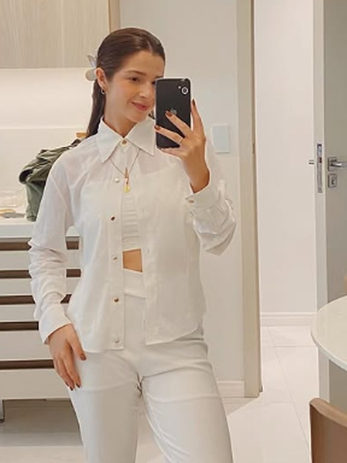
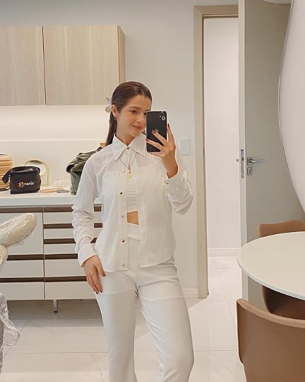

Iasmim Leão · Cirurgiã-dentistaPrevenção é o começo.
Odontologia estética que começa pelo cuidado: avaliar, orientar e só então tratar. Dentística, clareamento dental e harmonização orofacial.
Pelo WhatsApp, em uma mensagem. Você tira as dúvidas antes de marcar.

- Registro
- CRO-CE 18162
- Aperfeiçoamento
- Dentística
- Pós-graduanda
- Harmonização
Prevenção em primeiro lugar
O sorriso bonito é consequência. Antes dele vem a saúde: olhar com calma, explicar o que está acontecendo e cuidar do que precisa de cuidado.
Toda consulta começa por uma avaliação. A partir dela você entende as opções e decide, sem pressa, o que faz sentido para o seu caso.
Como funciona a prevençãoDo cuidado de rotina à estética.
Quatro frentes de atendimento. Qual delas é para você, a avaliação responde.
- 01
Prevenção
Consultas de rotina, limpeza e orientação para cuidar antes de precisar tratar.
- 02
Dentística
Restaurações e estética dental que devolvem forma, função e naturalidade.
- 03
Clareamento dental
Clareamento indicado e acompanhado pela dentista, depois de uma avaliação.
- 04
Harmonização orofacial
Procedimentos estéticos na face e nos lábios, feitos por cirurgiã-dentista.

Iasmim Leão, cirurgiã‑dentista.
Atendo com foco em odontologia estética e em prevenção. Meu trabalho passa pela dentística, pelo clareamento dental e pela harmonização orofacial, sempre a partir de uma avaliação individual.
- Registro
- CRO-CE 18162
- Formação
- Aperfeiçoada em Dentística
- Em curso
- Pós-graduação em Harmonização
Resultados de consultório.
Início e resultado final de tratamentos realizados pela Iasmim.


Casos atendidos por Iasmim Leão, CRO-CE 18162. As imagens mostram o início e o resultado final do tratamento. Cada pessoa responde de um jeito, e a indicação depende de avaliação.
Três passos, sem pressa.
Avaliação
Uma conversa sobre o que incomoda e o que você espera, seguida do exame clínico.
Plano de tratamento
Você recebe as opções explicadas em linguagem simples, com o que cada uma envolve.
Acompanhamento
Depois do tratamento, os retornos mantêm o resultado e a saúde em dia.
Casos, bastidores do consultório e dicas de prevenção. Mais de 18 mil pessoas acompanham por lá.
Seguir no InstagramPerguntas frequentes
Como agendo uma avaliação?
Pelo WhatsApp, no (85) 98995-1456. Conte o que você procura e combinamos o melhor horário.
De quanto em quanto tempo devo ir ao dentista?
Em geral, a cada seis meses. Na avaliação, a dentista indica o intervalo certo para você, que pode ser menor ou maior.
O que é dentística?
É a área da odontologia que restaura a forma, a função e a estética dos dentes, com restaurações e reconstruções em resina, por exemplo. Saiba mais sobre dentística.
Clareamento dental causa sensibilidade?
Algumas pessoas sentem sensibilidade durante o tratamento, e ela costuma passar. Por isso o clareamento é indicado e acompanhado pela dentista. Veja como funciona.
Dentista pode fazer harmonização orofacial?
Sim. A harmonização orofacial é uma especialidade reconhecida pelo Conselho Federal de Odontologia. Entenda a harmonização orofacial.
Sua avaliação começa com uma mensagem.
Escolha o que você procura e o WhatsApp já abre com a mensagem pronta. É só enviar.
O que você procura?
Ou mande uma mensagem direta para o (85) 98995-1456.